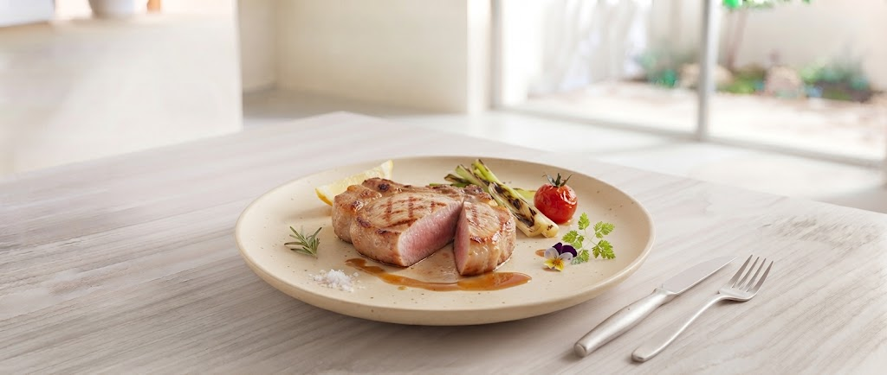
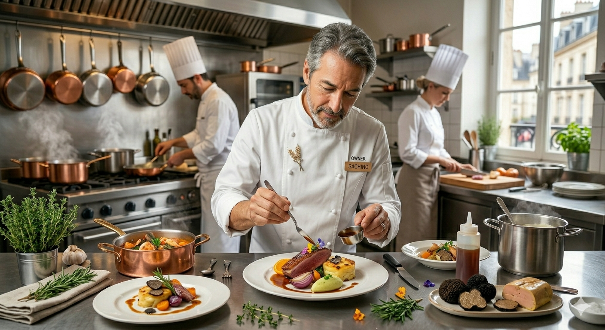
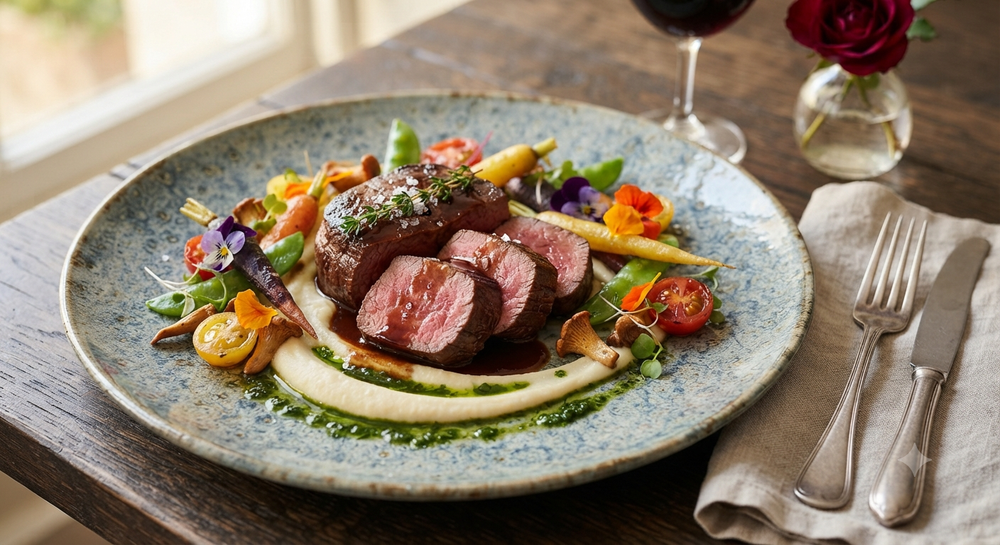

eat local. feel the earth.
山形の旬を味わう

※完全予約制となっております

山形の名門、パレスグランデール別館「松澤園」として誕生し、40年。2022年、私たちは「サステナビリティ」を掲げる薪火レストランとして生まれ変わりました。東北芸術工科大学とのコラボレーションにより、空間から食体験までを再定義しています。
松田 蓮 Chef
和食を軸に、山形の旬野菜と対話する料理人。野菜の端材まで使い切るピュレ作りなど、食材への深い敬意を込める。
石渡 Manager/Sommelier
東京・関西の星付きレストランで研鑽を積んだソムリエ。薪火の香りと調和するナチュールワインを提案。
「記憶に残る特別な時間を」
ただ空腹を満たすだけの食事ではなく。幻想的な庭園の静寂、薪が爆ぜる音、そして炎のゆらぎ。大切な人と五感のすべてで語らう、一生ものの非日常体験を求めている。
「身体に馴染む、滋味深い和の美食」
スパイスの微かな刺激と薪火の煙が、素材本来の生命力を呼び覚まします。和食の繊細さをベースにしながら、一口ごとに心が解けていくような、滋味深く優しい一皿を求めている。
「未来を想う、誠実な選択」
山形の風土を守る生産者との対話、食材を無駄なく使い切る調理法。環境への配慮も含めた「物語」を味わうことで、自分自身の選択に誇りを持てる。そんな誠実な食卓を選びたい。

「eat local. feel the earth.」をコンセプトに、山形の旬と向き合う。
私たちは山形の旬と向き合い、完全予約制という形で食材の命を余すことなく使い切り、美しい庭園とともに「ここでしかできない体験」を提供します。
シェフが厳選したスパイス使いと、食材本来の味を引き出す薪火の技術について。私たちの料理の哲学をご紹介します。
40年の歴史を持つ庭園と、五感で静寂を楽しむための空間づくり。日常を忘れる体験がここにあります。
SHOTOENでは、お客様と山形の風土・生産者様をより深く繋ぎ、食体験を何倍にも深める新しい取り組みを準備しております。
お料理とともに、シェフがその食材を選んだ理由や、生産者様が込めた想い・山形で育まれた風土の背景をつづった「物語カード」を各テーブルへ配布。一皿一皿の背景を味わう、より奥深い食体験をお届けします。
自家農園スモークオイルや薪火燻製、契約農家から届く旬の地野菜を詰めたオリジナルギフトボックス。大切な方への贈り物やご自宅での贅沢なひとときに、山形の物語をお届けします。